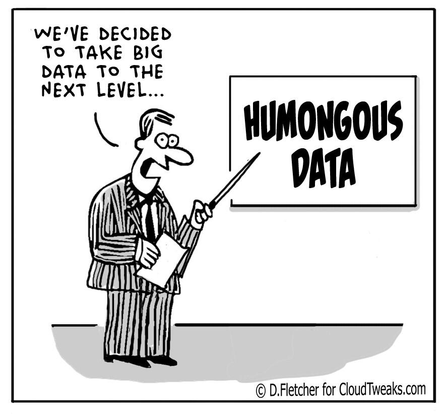
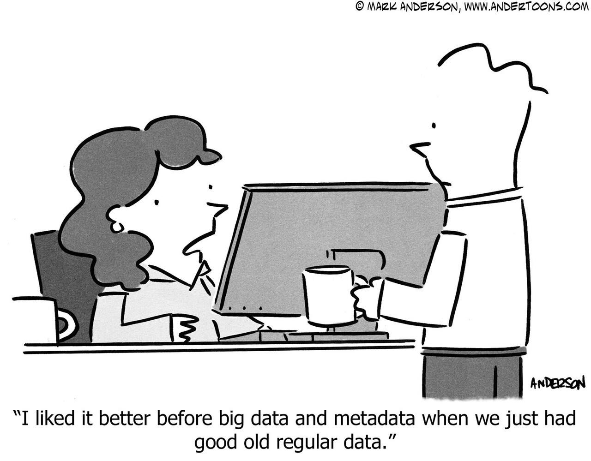
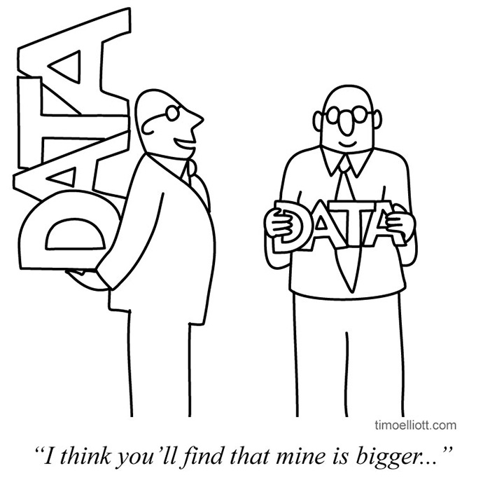
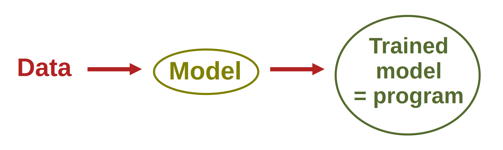
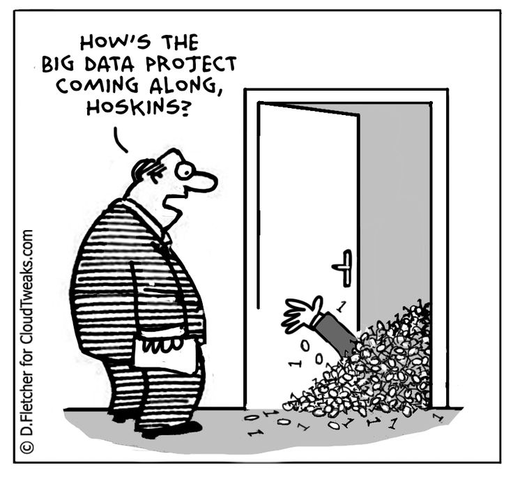
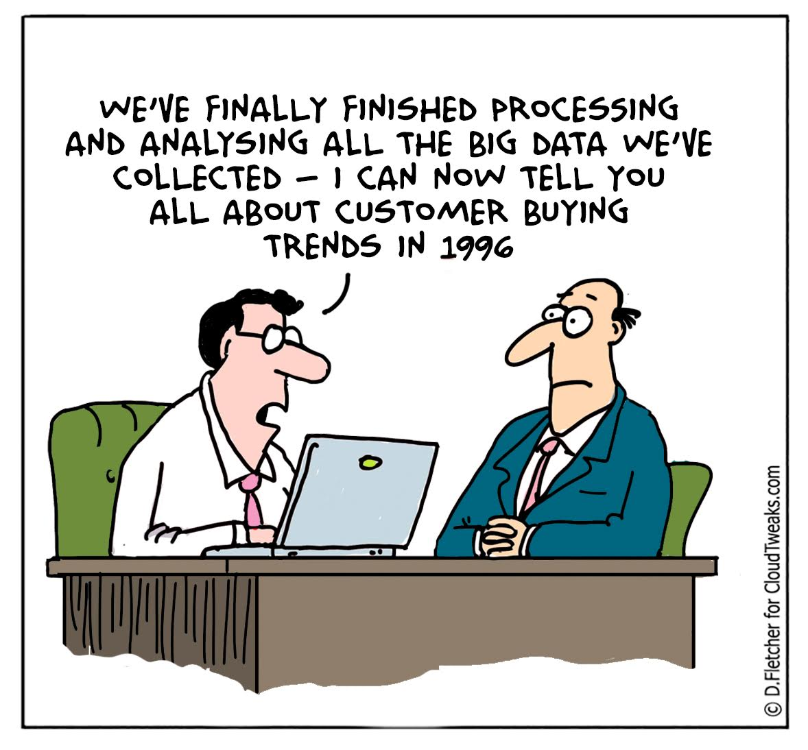

Harnessing big data
for agricultural excellence
Part 2: Diagnosing and implementing big data solutions
Content from the webinar slides for easier browsing.
Who we are
Simon Fraser University
SFU hosts the Cedar supercomputer—a cluster of 100,400 CPUs and 1,352 GPUs soon to be replaced by an even larger computer cluster.
SFU also works with the Digital Research Alliance of Canada to offer researchers large amounts of computing power to solve challenging data and technology problems, as well as training to optimize their solutions.
SFU’s Big Data Hub
Since 2016, Simon Fraser University’s Big Data Hub has been offering workshops, events, and consulting services to researchers and industry partners helping them remain at the top of the fast evolving data landscape.

BC Centre for Agritech Innovation
Since 2022, SFU BCCAI has been helping small and medium enterprises in the farming industry to embrace technology driven solutions in:
- agritech projects
- training & upscaling
- agritech network
Goals for this workshop
Session 1
A (hopefully) friendly lecture to:
- Demystify big data.
- Demonstrate the critical importance of big data in agriculture and farming.

Session 1 recap
Big data is defined by the 3 “V”:
- Volume (lots of data is generated)
- Variety (images, sounds, text…)
- Velocity (generated continuously)

Big data has become crucial because it allows to train artificial intelligence models.

Once trained, those models are extremely powerful and capable of performing tasks impossible for traditional computer programs.
(e.g. creating art, generating human text, chat bots, excellent forecasting and optimization, computer vision, self-driving cars…).
Big data and AI are transforming all sectors, including agriculture because they allow:
- Real time monitoring
- Better decision making
- Optimizations
- Automation of tasks
However there are challenges to the implementation of such transformative methods.
- Infrastructure development
- Skill gaps among agricultural professionals
We are here to help.
This is the goal of today’s session.

Session 2
Today
An interactive workshop to:
- Brainstorm on how big data can benefit your operation
- Help you make the transition to smart farming

Data management
First, let’s focus on your data
I will ask you to think about:
- The data you use for your operation
- How you are collecting it and storing it
- How you could automate this

Analytics
Now, let’s think about what this data is actually used for:
- What is purpose of this data?
- How do you analyse it?
- What could be the benefits of using AI to process your data?

Challenges
What are the challenges of such an implementation
- at the financial level
- at the practical level
- due to knowledge gaps

Who to turn to?
- Connecting with other operators can be extremely powerful in this transformation
- You may also need to talk with researchers
- You will need to find a technology provider
- Here my colleagues from the Big Data Hub and the BCCAI will jump in to orientate you
SFU’s Big Data Hub
BCCAI
Communication with experts
You need basic concepts and vocabulary to communicate your needs to technology providers and researchers
- What concept do you feel that you are lacking and that we should cover?
- Vocabulary clarification

Resources
Understanding neural networks
3Blue1Brown by Grant Sanderson has a series of 4 videos on neural networks which is easy to watch, fun, and does an excellent job at introducing the functioning of a simple neural network
Literature
Open-access preprints:
Arxiv Sanity Preserver by Andrej Karpathy
ML papers in the computer science category on arXiv
ML papers in the stats category on arXiv
Distill ML research online journal